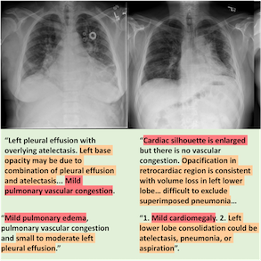
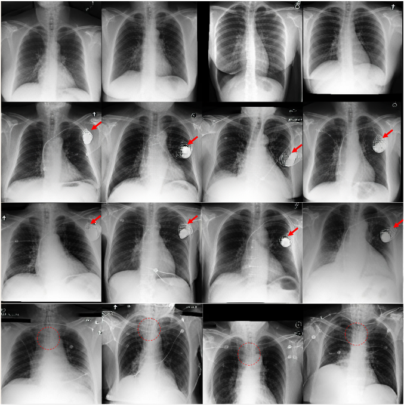
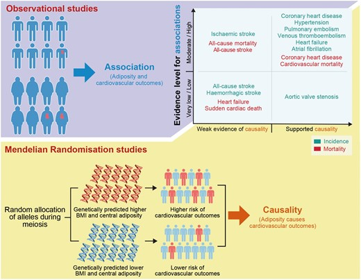
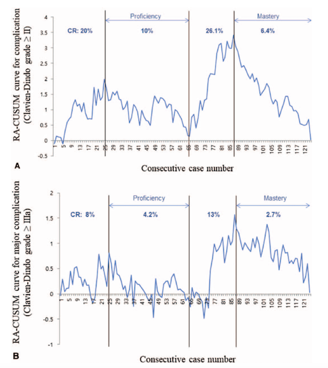

|
Won Jun Kim (김원준) (First name: Won Jun, pronouned "one june" / Last name: Kim) I'm a M. Sc. candidate advised by Prof. Jong Chul Ye at KAIST AI's Bio-Imaging, Signal Processing & Learning Lab in Seoul, South Korea. Before that, I went to medical school at Korea University and received my M.D. Email / CV / Google Scholar / Github |
{kind=link}
ResearchI am primarily interested applying generative AI to interpretably model complex relationships between, for example, [1] different modalities (multimodal understanding), [2] black-box neural networks and data (for interpretability), etc. I also like medical statistics. †Equal contribution (co-first authors) |

|
Derivative-Free Diffusion Manifold-Constrained Gradients for Unified XAI
Won Jun Kim†, Hyungjin Chung†, Jaemin Kim†, Sangmin Lee, Byeongsu Sim, Jong Chul Ye arXiv preprint, 2024 Counterfactual generation and feature attribution without any access to the model or its gradients using diffusion models and the theory of ensemble Kalman filters. |
|


|
LLM-CXR: Instruction-Finetuned LLM for CXR Image Understanding and Generation
Suhyeon Lee†, Won Jun Kim†, Jinho Chang, Jong Chul Ye ICLR, 2024 Leveraging an LLM's language-based reasoning ability for multimodal alignment using a pretrained LLM and image tokenization with a VQ-GAN. |
|

|
Association between adiposity and cardiovascular outcomes: an umbrella review and meta-analysis of observational and Mendelian randomization studies
Min Seo Kim, Won Jun Kim, Amit V Khera, Jong Yeob Kim, Dong Keon Yon, Seung Won Lee, Jae Il Shin, Hong-Hee Won Eur Heart J, 2021 Systematic review of the relationship between adiposity (obesity) and cardiovascular illness. |
|

|
Comprehensive Learning Curve of Robotic Surgery: Discovery From a Multicenter Prospective Trial of Robotic Gastrectomy
Min Seo Kim, Won Jun Kim, Woo Jin Hyung, Hyoung-Il Kim, Sang-Uk Han, Young-Woo Kim, Keun Won Ryu, Sungsoo Park Ann Surg, 2021 Tracking of operation times and complication rates in robotic gastrectomy as the surgeons' experience grows. |

|
Comparative efficacy and safety of pharmacological interventions for the treatment of COVID-19: A systematic review and network meta-analysis
Min Seo Kim, Min Ho An, Won Jun Kim, Tae-Ho Hwang PLoS Medicine, 2020 Systematic review of the evidence behind COVID-19 treatments in the first wave of the pandemic. |